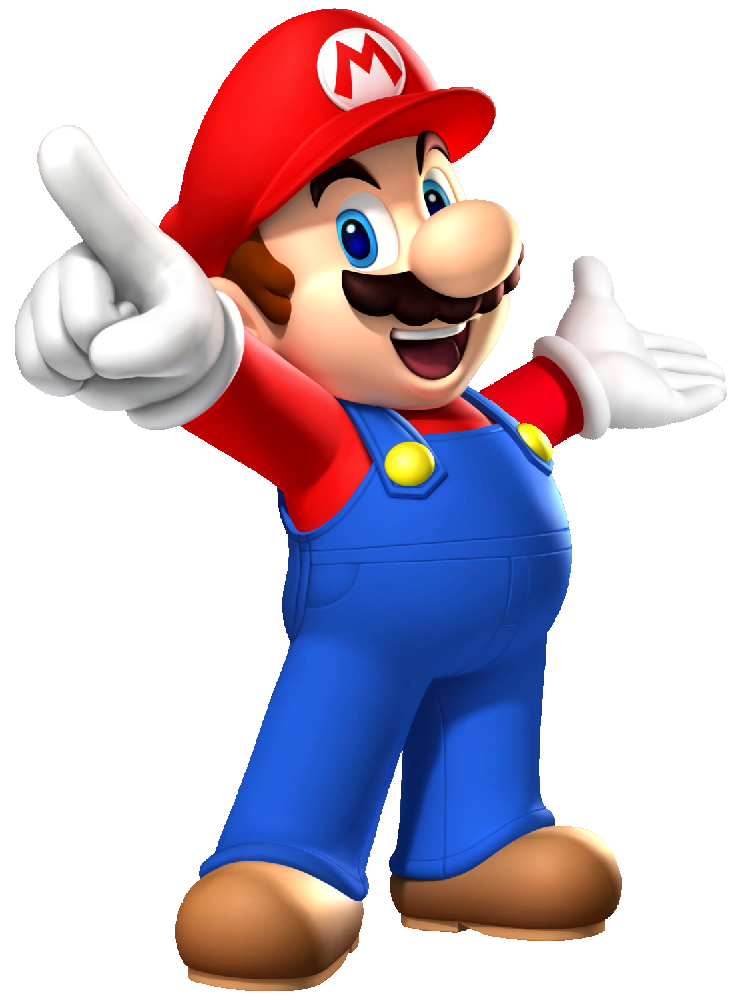
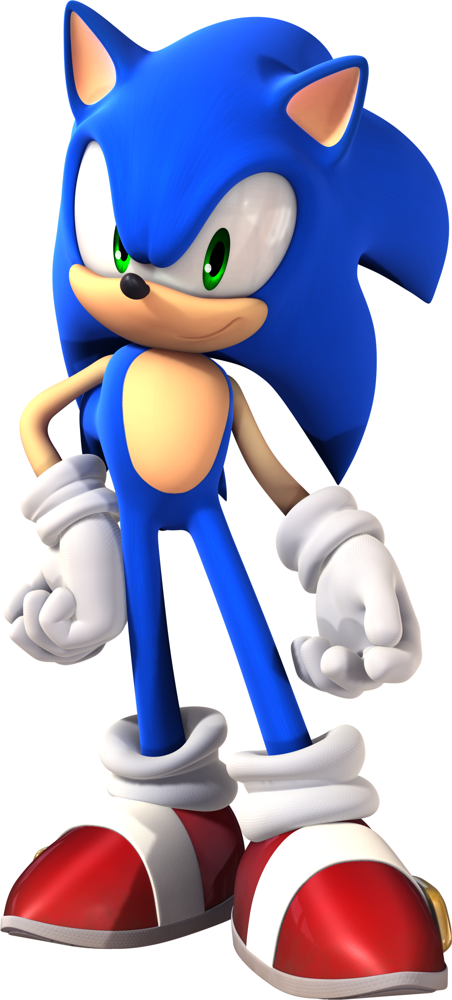
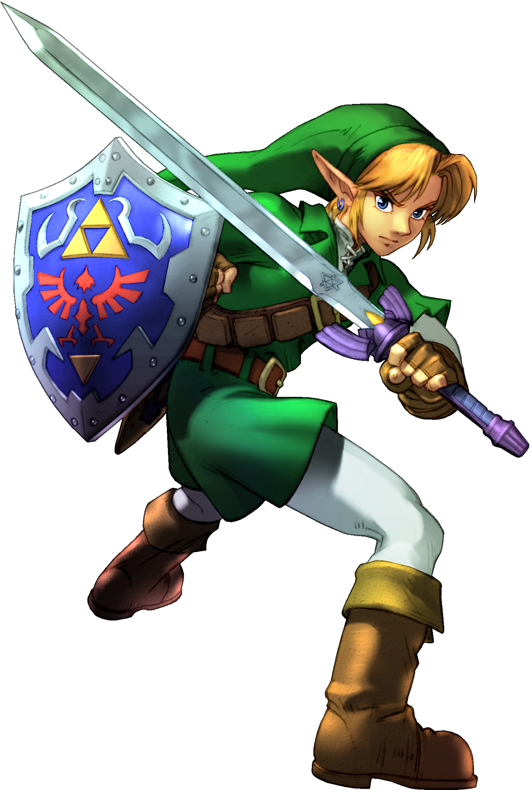
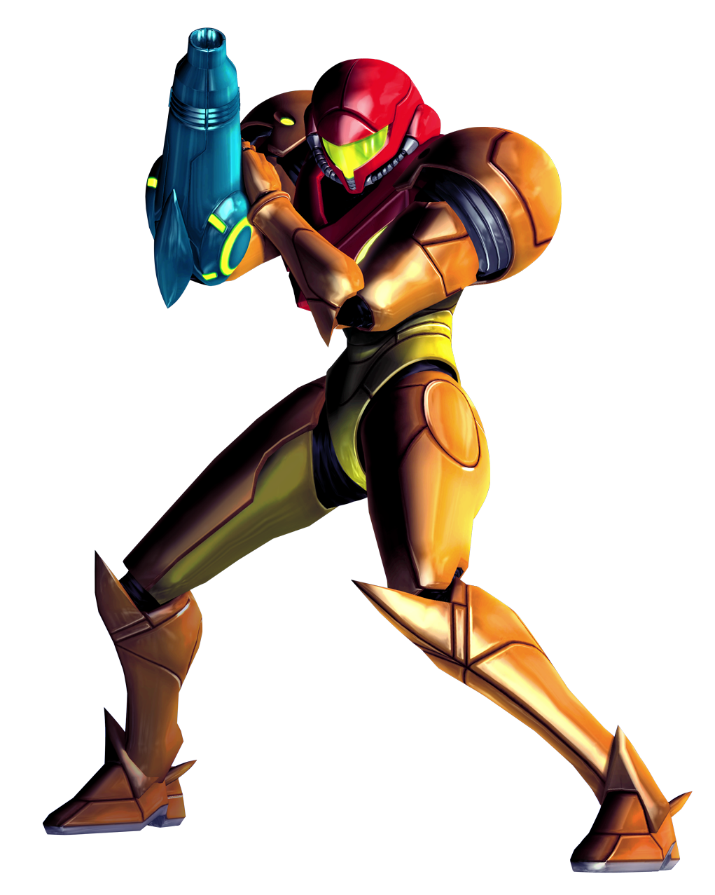
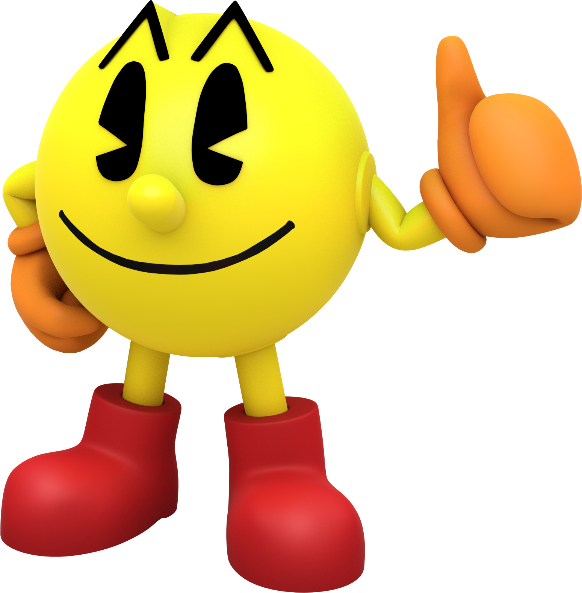

Introducción
Los videojuegos han creado héroes y villanos que forman parte de la cultura popular. Estos personajes no solo entretienen, también transmiten valores y se convierten en símbolos reconocidos globalmente.
Al igual que en el anime los videojuegos permiten entrar a mundos completamente nuevos, pero con un gran cambio, la posibilidad de vivir dichas aventuras a través de un personaje, no importa cual sea siempre habra una aventura que vivir y gracias a los videojuegos,estas aventuras nos pemiten entrar en los pensamientos del personaje y conectar con este.
Ejemplos de personajes
- Mario: El fontanero más famoso de Nintendo, símbolo de los videojuegos, uno de los mas grandes iconos de los videojuegos a nivel mundial es famoso por sus aventuras sobre todo por ser el heroe del reino champiñon,salvando a la princesa peach del villano bowser, y no solo estas aventuras sino diferentes videojuegos como en karts, de deportes u otros que lo han hecho muy importante.
- Sonic: El erizo azul de SEGA, rápido y con gran una gran actitud, nacio para hacerle rivalidad a mario, una guerra entre ambas empresas, y un personaje que se gano el cariño de todos, por su actitud relajada, bromista pero que ademas se preocupa por sus amigos y haria lo que fuera por que esten bien.
- Link: El héroe de hyrule en la saga zelda, conocido por su valentía, fue creado para que el jugador se conectara con el, de ahi proviene su nombre. "link" o enlace en español, mediante este personaje se pueden encarnar aventuras legendarias para salvar a hyrule del malvado ganondorf que hara lo posible para tener todo el poder en sus manos.
- Samus: La cazadora espacial de la saga Metroid, pionera entre las protagonistas femeninas, una de los primeros personajes femeninos en aparecer en los videojuegos. Se hizo famosa gracias a ese detalle, ademas de enfrentar diferentes peligros espaciales, todo para salvar a la humanidad.
- Pac-Man: Un clásico de los arcades, ícono retro de la cultura gamer, junto con mario y otros fue uno de los primeros juegos famosos en aparecer sobretodo por su jugabilidaad y aparicion en los arcades, uno de los primero iconos de los videojuegos.
aqui se expondran una serie de personajes iconicos de los videojuegos que son conocidos en todo el mundo.
Galería de personajes




